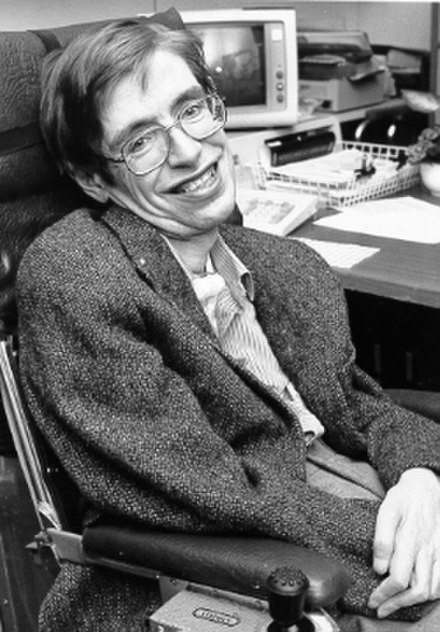

Stephen_Hawking
Also known as Star Child

Stephen William Hawking (8 January 1942 – 14 March 2018) was an English theoretical physicist, cosmologist, and author who, at the time of his death, was director of research at the Centre for Theoretical Cosmology at the University of Cambridge
Few lines about Stephen_Hawking
- Stephen Hawking was a renowned theoretical physicist who made significant contributions to our understanding of the universe and the laws of physics.
- Hawking was born on January 8, 1942, in Oxford, England.
- He grew up in a family of intellectuals and attended University College, Oxford, where he studied physics. He later went on to pursue graduate studies at Trinity College, Cambridge, where he completed his PhD in cosmology.
- Hawking is best known for his groundbreaking work on black holes and the origin of the universe. He developed the concept of Hawking radiation, which suggests that black holes emit particles over time and eventually evaporate. This theory has had a profound impact on the field of cosmology and helped scientists better understand the behavior of black holes.
- Hawking was diagnosed with amyotrophic lateral sclerosis (ALS) at the age of 21. Despite the debilitating effects of the disease, he continued to work and make significant contributions to science.
- He also became a vocal advocate for disability rights, using his platform to raise awareness about the challenges faced by people with disabilities.
- Awards and Honors :
- Adams Prize (1966)
- Albert Einstein Medal (1979)
- Copley Medal (2006)
- Presidential Medal of Freedom (2009)
- BBVA Foundation Frontiers of Knowledge Award (2015)
- Hawking was married twice and had three children. He was known for his sense of humor and his ability to communicate complex scientific concepts in a way that was accessible to the general public.
- He died on March 14th 2018 (aged 76) Cambridge, England
- Summary:
Hawking's contributions to the field of physics and his advocacy for disability rights have had a lasting impact on society. He was widely regarded as one of the most brilliant minds of his generation and his work continues to inspire scientists and researchers around the world.
"The greatest enemy of knowledge is not ignorance, it is the illusion of knowledge."
-- Stephen Hawking